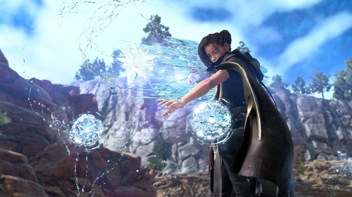

New and Upcoming
Welcome to the New and Upcoming page where you will discover the latest forum discussions on the latest new released titles.
Today games have reached that platform where it is known as video games, yes that`s correct and has gain the ability to tell a story as though you are watching a movie. Some of those games has reached a simulator level where you, drive a car, fly a plane as though you are doing it in real life.
Truth be told, you can actually do anything imaginary on a video game today. Most of the new releases focuses on graphics on game playability.
Even if a game doesn`t wind up landing every punch, I imagine that its constant surprises will be enough to keep me interested in its promising fullfillment.
I`ll take some creative swings from a studio over that has a great genre piece any time. Some of those creative swings, almost all of them has online gaming available, which in turn makes it more worthwhile to play.
There are a few games that turned heads when it came to graphics and performance. Here are three of those games:
Hogwarts Legacy
Even better, though, is the world itself, it is just packed with nearly everything I wanted in a Potter game and more.
You`ll find yourself exploring Hogwarts stone-cobbled halls and secret passageways, you can fly around the Forbidden Forest on a broomstick, and explore dark caves lit only by the glow of your Lumos spell.
The game brilliantly captured the look and feel of the Wizarding World of Hogwarts that amazed me , no matter what trivial errand they had me wrapped up in.

Deadspace Remake
One of the best horror games, that ive played this far with jaw dropping graphics and out of this world story line. Gameplay is intense and can be be set in the options menu to suite you level.
Deadspace remake takes you into a dark space sci-fi environment with creatures that jumps out of nowhere to give you the chills and fright your life. If you are talking about action, this is the game for you.
Forspoken
In this game you play a role of a young lady called Frey who gets into trouble, lands in a building picks up a armband and gets transported to an other dimension where she recieve superpowers and magic and has to face titans.
She tries to find a portal to return her back to her world, but in the process needs to endure setbacks and alot of enemies and friends and also looses one friend who dies. She continues on her journey and improves her powers and continues to defeat enemies.
Overall this is one great adventure, action game. Gameplay is astonishing and the graphics is tremendous.